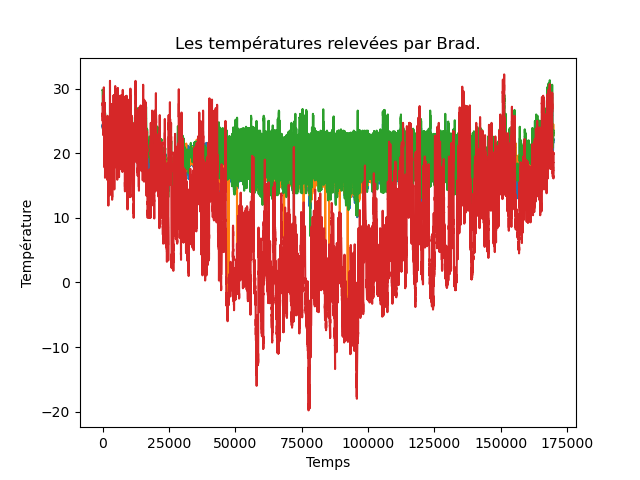

Dans ce TP, on continue notre exploration de notions et techniques de base pour la science des données. On va notamment manipuler des fichiers de données beaucoup plus gros que précédemment et réaliser des tâches de régression.
Tous les TPs précédents doivent impérativement avoir été faits.
À l'issue de ce TP, vous m'envoyez par email un compte-rendu (format odt) indiquant la réponse aux questions qui sont posées. Vous m'envoyez également un fichier python réalisant toutes les manipulations de ce TP : je dois pouvoir exécuter ce fichier en tapant python3 nom-de-votre-fichier.py et reproduire vos résultats. Cette exécution ne doit pas provoquer d'erreur de python. Remarque : un notebook ne convient pas.
Introduction
Brad vit en altitude, dans les montagnes du Colorado (il y fait froid assez tôt dans l’automne et tardivement au printemps). Il a aménagé une station de collecte des températures. Ainsi, quatre thermomètres électroniques mesurent la température dans son séjour, son bureau, son sous-sol et à l’extérieur de chez lui, toutes les 3 minutes. Ces thermomètres sont reliés à son ordinateur qui stocke chacune des mesures dans quatre fichiers, un fichier par thermomètre. On dispose de ces quatre fichiers qui contiennent plusieurs dizaines de milliers de mesures. Notre objectif est d’étudier les températures ainsi mesurées. On sait également que le thermostat de Brad est réglé à 21°C pendant la journée, à 16°C pendant la nuit.
Ces 4 fichiers de données sont disponibles à ces 4 urls :
- https://philippe-preux.github.io/ensg/miashs/datasets/brad-basement
- https://philippe-preux.github.io/ensg/miashs/datasets/brad-lab
- https://philippe-preux.github.io/ensg/miashs/datasets/brad-livingroom
- https://philippe-preux.github.io/ensg/miashs/datasets/brad-outside
Ces 4 fichiers ont le même format.
Dans votre navigateur, regardez l'un d'eux.
Vous constatez qu'il ne s'agit pas de fichiers csv et qu'ils n'ont pas d'en-tête avec le nom des attributs.
Dans ces 4 fichiers, les colonnes sont séparées par un espace. Dans l'ordre, les colonnes correspondent aux informations suivantes :
- l'année
- le mois
- le quantième
- heure
- minute
- seconde
- température
Les lignes de chacun de ces fichiers sont ordonnées chronologiquement.
Construction d'un tableau de données
On doit donc rassembler le contenu de ces 4 fichiers dans un tableau de données. Cette fusion doit s'effectuer en fonction de l'instant de la mesure.
Pour cela, on commence par lire chacun de ces fichiers en le stockant dans un tableau de données.
Pour lire ces fichiers qui ne sont pas au format csv, on utilisera la méthode read_table() de pandas. Regardez la documentation pour utiliser les bons arguments et lisez ces 4 fichiers dans 4 tableaux de données différents. Comme ces fichiers n'ont pas d'en-tête indiquant le nom des colonnes, donnez-leur un nom lors de la lecture. On trouve les mêmes 6 attributs indiquant la date et l'heure dans les 4 fichiers ; donnez-leur le même nom (ce qui vous simplifiera les choses un peu plus tard). Vérifiez que la lecture s'est bien passée.
Ensuite, on fusionne ces 4 tableaux de données pour n'en faire qu'un seul que nous dénommerons brad.
Il faut utiliser la méthode merge_ordered() de pandas qui fusionne deux tableaux de données.
N'hésitez pas à regarder la documentation concernant cette méthode.
Une fois cela, fait, on peut détruire les 4 tableaux de données (commande python del) et ne conserver que brad.
À faire : construisez ce tableau de données brad ?
Remarque : bien entendu, lorsqu'on réalise une telle opération de fusion, on vérifie que tout se passe bien. Puisque nous allons ensuite travailler uniquement sur le tableau de données brad, si celui-ci, pour une raison ou une autre, n'est pas construit correctement, tout ce que nous ferons par la suite sera faux.
Il faut donc impérativement passer quelques instants à s'assurer que brad a été correctement construit.
Pour vous aider, je vous indique ci-dessous les début et fin de brad correctement chargé :
>>> brad.head()
an mois j h mn temp_b temp_l temp_lr temp_o
0 2003 7 25 16 4 24.0 NaN 29.8 27.5
1 2003 7 25 16 7 24.0 NaN 29.8 27.3
2 2003 7 25 16 10 24.0 NaN 29.8 27.3
3 2003 7 25 16 13 24.1 NaN 29.8 27.4
4 2003 7 25 16 16 24.1 NaN 29.8 27.8
>>> brad.tail()
an mois j h mn temp_b temp_l temp_lr temp_o
169831 2004 7 16 15 16 21.7 22.9 22.8 16.8
169832 2004 7 16 15 19 21.7 22.9 22.8 16.9
169833 2004 7 16 15 22 21.7 22.9 22.8 16.8
169834 2004 7 16 15 25 21.7 22.9 22.8 16.8
169835 2004 7 16 15 28 21.7 22.9 22.8 16.4
Obtenez-vous le même résultat ? Est-ce que votre tableau de données semble correct ?
J'ai nommé les colonnes correspondant aux différentes températures temp_b pour le sous-sol (basement), temp_l pour la laboratoire (lab), temp_lr pour le salon (living-room) et temp_o pour l'extérieur (outside).
Notez bien les NaN : vous devez les avoir aussi pour ces lignes-là.
Question : qu'est ce que ces NaN ? Que font-ils là ? Quel est leur signification ?
Exploration visuelle du jeu de données
On peut commencer par quelques graphiques. Par exemple, représentons ces courbes de températures.
Un premier essai pourrait vous donnez cela :

où on ne voit rien !
Réalisez le graphique ci-dessous qui montre les 4 courbes de températures séparées les unes des autres.

C'est beaucoup mieux. Néanmoins, l'axe des abscisses est illisible. S'agissant de l'instant de mesure des températures, on préférerait y lire des dates, commme sur cette figure :

C'est ce que nous allons faire mais cela nécessite quelques explications concernant les dates.
Dates
Les dates sont des objets complexes : ce ne sont pas des nombres, mais on peut faire des opérations entre dates : on peut soustraire une date à une autre et obtenir une durée. De même, on peut ajouter une durée (positive ou négative) à une date et obtenir une autre date. Par ailleurs, il y a un ordre total sur les dates.
Concernant leur représentation, il en existe de multiples : par exemple, en français, on peut écrire 13/10/23, 13/10/2023, 13 octobre 2023, 13 oct. 2023, ... On peut trouver des dates écrites sous des formats très différents dans les jeux de données, et c'est la même chose pour les heures : 14h 27 mn, 14h 27 mn 29 s, 14:27:29, ...
Cette souplesse dans l'écriture nécessite des fonctions spécifiques permettant de les lire, les afficher et les manipuler.
Nous allons transformer les 6 attributs indiquant les instants de mesure de températures en un attribut date. Nous commençons par quelques généralités sur les dates en python.
Les dates avec pandas
La transformation des 6 attributs jour, mois, année, heure, minute, seconde en date se fait à l'aide de la méthode to_datetime() de pandas. Regardez la documentation de cette méthode (regardez les exemples) et ajoutez un attribut date au tableau de données brad contenant la date et l'heure de chaque ligne.
Cela fait, l'attribut date contient un « tampon temporel » qui indique une date et une heure. Par exemple :
brad.date [0]
donne :
Timestamp('2003-07-25 16:04:00')
et on peut facilement accéder à chaque élément de ce tampon temporel :
>>> brad.date [0].day 25 >>> brad.date [0].month 7 >>> brad.date [0].year 2003 >>> brad.date [0].hour 16 >>> brad.date [0].minute 4 >>> brad.date [0].second 0
et à d'autres :
>>> brad.date [0].month_name () 'July' >>> brad.date [0].day_name () 'Friday' >>> brad.date [0].day_of_week 4 >>> brad.date [0].day_of_year 206 >>> brad.date [0].week 30 >>> brad.date [0].weekofyear 30 >>> brad.date [0].days_in_month 31
On peut alors facilement sélectionner des lignes correspondant à certains moments. Par exemple, la température du séjour pour toutes les lignes qui correspondent aux 23 du mois :
>>> brad [brad.date.dt.day == 23].temp_lr
13590 24.1
13591 24.1
13592 24.1
13593 24.0
13594 24.0
...
159136 21.8
159137 21.8
159138 21.7
159139 21.7
159140 21.6
Application aux dates dans le jeu de données Brad
Corrélation des températures ?
intuitivement, il doit y avoir des corrélations...
Exploration visuelle
scatter plot
Approche quantitative